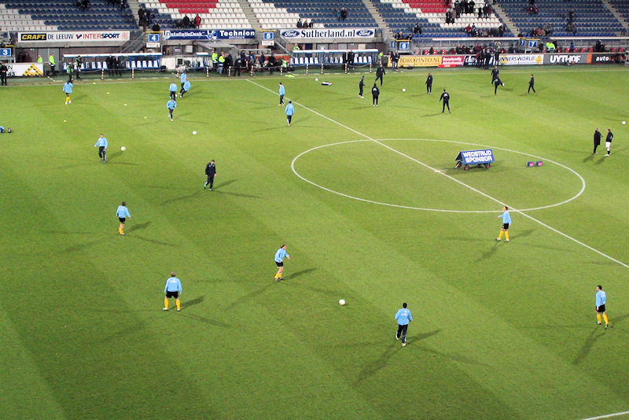
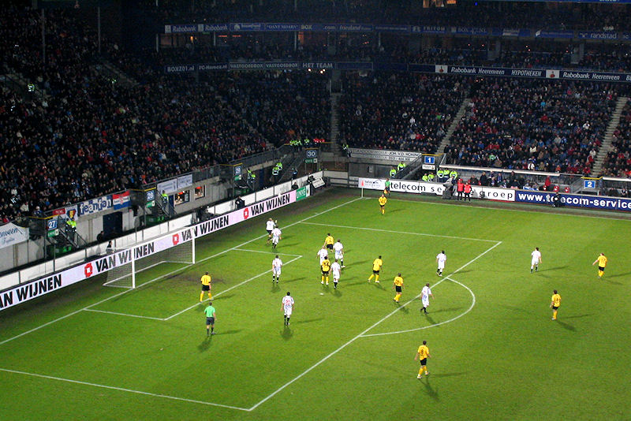
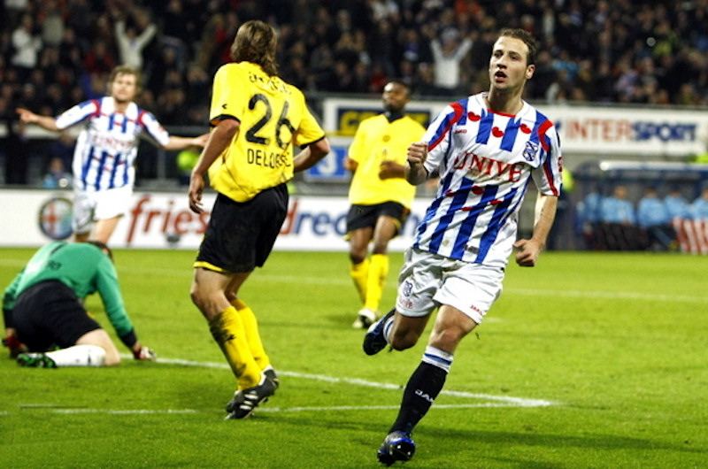
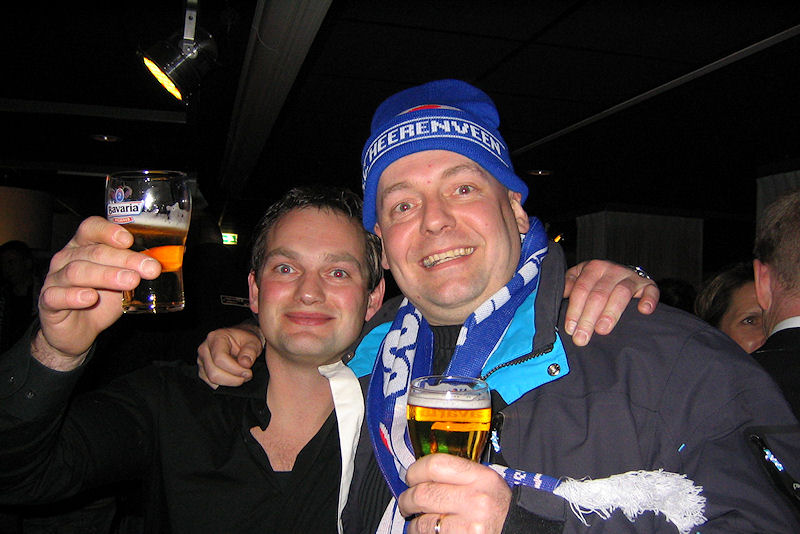
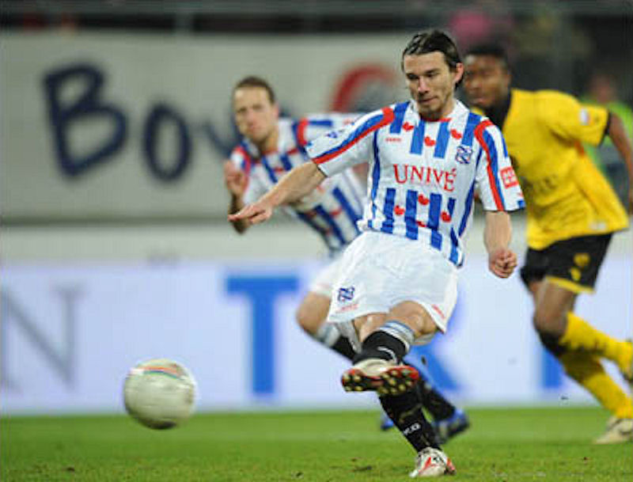
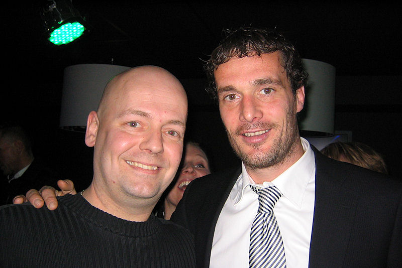

|
SC Heerenveen - Roda JC (2-0) 24 januari 2009 |

Warming-up.

De eerste minuten beloofden veel goeds. Vanaf de aftrap was gelegenheidsspits
Smarason dicht bij de openingstreffer. Castro redde ten
koste van een hoekschop. In de daaropvolgende counter schoot Delorge, op
aangeven van Cissé, over.
Daarna verzandde het duel snel, waarbij Roda steeds meer de regie in handen
kreeg. Dat kwam mede door het slordige spel van
Heerenveen. Kansen leverde het overwicht Roda niet op overigens.
Heerenveen kreeg die wel, via Breuer en Smarason, maar zij schoten
over en naast.

Addo maakt een knullige fout, waar Pranjic van profiteert. Na een combinatie
met Smarason en Grindheim kan Beerens afronden: 1-0, (40').

Roda-supporter grijpt naderend carnaval aan om zich te verkleden als
Heerenveenfan.

Het begin van de tweede helft was opnieuw voor Roda, maar weer bleef de
ploeg te ver van het Friese doel verwijderd. De eerste aanval
van Heerenveen leidde daarna direct de 2-0 in. Beerens kreeg de bal met wat
geluk binnen het strafschopgebied, draaide handig weg
en werd vervolgens onderuit gehaald door Linssen. Pranjic mocht de
toegekende penalty nemen en faalde niet: 2-0, (53').

Oud-Rodaspeler Gerald Sibon (rechts).